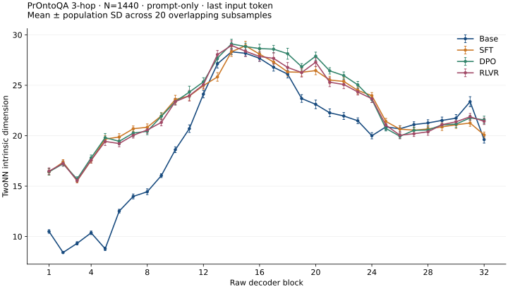
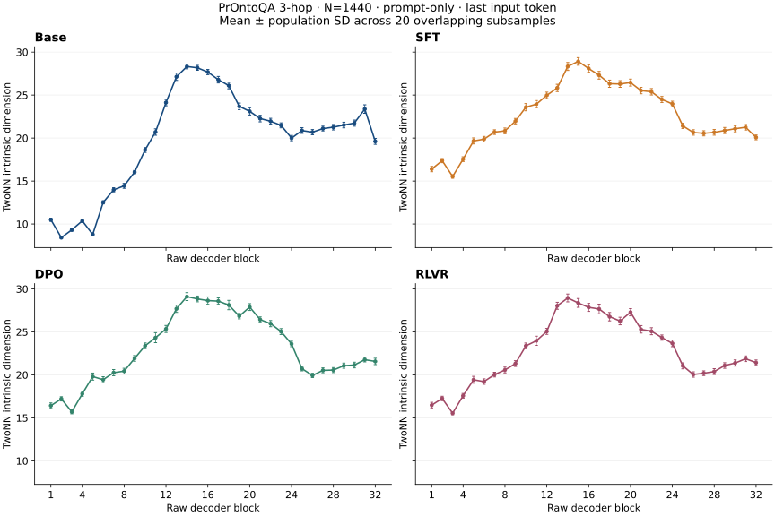

1440 fixed 3-hop questions; Base, SFT, DPO and RLVR; prompt only, last nonpadding input token, raw decoder blocks 1–32.


The reference tables preserve the historical experiment values. Current-code checks are recorded in publication validation.
Peak selection uses unsmoothed means and the earliest maximum. It is descriptive, without a significance test. Invalid layers: 0.
The four stages use the same items and saved sampling indices. Each layer uses 20 subsets of 1296 items sampled without replacement. Two nearest neighbors are recomputed inside each subset. Raw coordinates are neither standardized nor L2-normalized. Distances are direct float64 Euclidean distances. The independent estimator follows the pinned author's zero-distance and tied-neighbor filtering, empirical CDF, regression through the origin, lowest 90% of ratios and terminal two-point trimming.
Forward and storage: float32; TF32 disabled. Embeddings and final RMSNorm are excluded. Overlapping subsamples are not independent experiments. No missing estimate is replaced with zero.
| Stage | Maximum zero neighbors | Maximum tied neighbors | Minimum valid points |
|---|---|---|---|
| base | 0 | 0 | 1296 |
| sft | 0 | 0 | 1296 |
| dpo | 0 | 0 | 1296 |
| rlvr | 0 | 0 | 1296 |
Zero and tied counts may overlap.
Only prespecified layers [1, 16, 32] are checked. Each k uses its saved permutation, disjoint equal blocks and a discarded remainder. Block SD is distinct from overlapping-subsample SD. Sample-size drift limits interpretation to the observed scale.
| Stage | Layer | k | Items/block | Mean | Population SD |
|---|---|---|---|---|---|
| base | 1 | 1 | 1440 | 10.5398 | 0.0000 |
| base | 1 | 2 | 720 | 10.1699 | 0.0837 |
| base | 1 | 3 | 480 | 9.4930 | 0.3492 |
| base | 1 | 4 | 360 | 9.5759 | 0.4711 |
| base | 1 | 5 | 288 | 9.5248 | 0.5480 |
| base | 1 | 6 | 240 | 9.1804 | 0.7027 |
| base | 1 | 7 | 205 | 9.2977 | 0.6006 |
| base | 1 | 8 | 180 | 9.1142 | 0.9622 |
| base | 1 | 9 | 160 | 9.5857 | 0.6853 |
| base | 1 | 10 | 144 | 9.5408 | 0.6146 |
| base | 1 | 11 | 130 | 9.2152 | 1.0124 |
| base | 1 | 12 | 120 | 9.2218 | 1.3417 |
| base | 1 | 13 | 110 | 9.2721 | 1.4092 |
| base | 1 | 14 | 102 | 9.4198 | 1.2520 |
| base | 1 | 15 | 96 | 9.3509 | 1.5554 |
| base | 1 | 16 | 90 | 9.5835 | 1.7780 |
| base | 1 | 17 | 84 | 9.5005 | 1.0982 |
| base | 1 | 18 | 80 | 10.0903 | 1.1590 |
| base | 1 | 19 | 75 | 10.0139 | 1.7586 |
| base | 1 | 20 | 72 | 9.4748 | 1.8724 |
| base | 16 | 1 | 1440 | 28.0470 | 0.0000 |
| base | 16 | 2 | 720 | 27.3271 | 0.5259 |
| base | 16 | 3 | 480 | 24.9866 | 0.6228 |
| base | 16 | 4 | 360 | 24.0935 | 1.9759 |
| base | 16 | 5 | 288 | 24.9641 | 1.6925 |
| base | 16 | 6 | 240 | 23.9435 | 1.4283 |
| base | 16 | 7 | 205 | 23.4880 | 1.1207 |
| base | 16 | 8 | 180 | 22.8190 | 1.8119 |
| base | 16 | 9 | 160 | 22.8326 | 1.5937 |
| base | 16 | 10 | 144 | 21.9419 | 1.5021 |
| base | 16 | 11 | 130 | 21.6402 | 1.5654 |
| base | 16 | 12 | 120 | 21.0039 | 1.9039 |
| base | 16 | 13 | 110 | 22.6783 | 1.7118 |
| base | 16 | 14 | 102 | 20.6640 | 2.0776 |
| base | 16 | 15 | 96 | 21.0097 | 2.2393 |
| base | 16 | 16 | 90 | 20.1203 | 2.7664 |
| base | 16 | 17 | 84 | 20.7095 | 2.5046 |
| base | 16 | 18 | 80 | 19.6644 | 1.4865 |
| base | 16 | 19 | 75 | 20.2870 | 3.2009 |
| base | 16 | 20 | 72 | 20.5445 | 3.5762 |
| base | 32 | 1 | 1440 | 20.0474 | 0.0000 |
| base | 32 | 2 | 720 | 17.7534 | 0.0978 |
| base | 32 | 3 | 480 | 16.4881 | 0.7180 |
| base | 32 | 4 | 360 | 15.0421 | 0.7317 |
| base | 32 | 5 | 288 | 15.0877 | 0.7097 |
| base | 32 | 6 | 240 | 14.3131 | 1.0347 |
| base | 32 | 7 | 205 | 13.4278 | 1.1103 |
| base | 32 | 8 | 180 | 12.8821 | 0.4361 |
| base | 32 | 9 | 160 | 12.7409 | 1.2900 |
| base | 32 | 10 | 144 | 12.7760 | 1.0612 |
| base | 32 | 11 | 130 | 12.5394 | 1.1763 |
| base | 32 | 12 | 120 | 12.2380 | 1.2438 |
| base | 32 | 13 | 110 | 12.1684 | 0.9135 |
| base | 32 | 14 | 102 | 12.5082 | 1.0660 |
| base | 32 | 15 | 96 | 12.0383 | 0.9730 |
| base | 32 | 16 | 90 | 11.4729 | 0.7406 |
| base | 32 | 17 | 84 | 11.6945 | 1.3168 |
| base | 32 | 18 | 80 | 11.4556 | 1.4793 |
| base | 32 | 19 | 75 | 10.8447 | 1.2401 |
| base | 32 | 20 | 72 | 11.1912 | 1.3328 |
| sft | 1 | 1 | 1440 | 16.6589 | 0.0000 |
| sft | 1 | 2 | 720 | 15.7394 | 0.8030 |
| sft | 1 | 3 | 480 | 14.8980 | 0.4192 |
| sft | 1 | 4 | 360 | 15.1103 | 0.7332 |
| sft | 1 | 5 | 288 | 14.5169 | 0.9119 |
| sft | 1 | 6 | 240 | 14.4165 | 0.8956 |
| sft | 1 | 7 | 205 | 14.8194 | 0.8395 |
| sft | 1 | 8 | 180 | 14.1755 | 1.6565 |
| sft | 1 | 9 | 160 | 14.1761 | 1.7336 |
| sft | 1 | 10 | 144 | 14.5655 | 1.8014 |
| sft | 1 | 11 | 130 | 13.9640 | 1.3298 |
| sft | 1 | 12 | 120 | 14.5186 | 1.3781 |
| sft | 1 | 13 | 110 | 14.5235 | 1.7278 |
| sft | 1 | 14 | 102 | 14.4558 | 1.9311 |
| sft | 1 | 15 | 96 | 13.9375 | 1.6472 |
| sft | 1 | 16 | 90 | 13.8965 | 2.6006 |
| sft | 1 | 17 | 84 | 13.7260 | 1.2922 |
| sft | 1 | 18 | 80 | 14.2374 | 1.2253 |
| sft | 1 | 19 | 75 | 13.7517 | 1.9244 |
| sft | 1 | 20 | 72 | 13.0909 | 1.8423 |
| sft | 16 | 1 | 1440 | 27.8089 | 0.0000 |
| sft | 16 | 2 | 720 | 28.1876 | 1.0791 |
| sft | 16 | 3 | 480 | 27.0436 | 0.5410 |
| sft | 16 | 4 | 360 | 26.1205 | 1.9057 |
| sft | 16 | 5 | 288 | 26.3500 | 3.1749 |
| sft | 16 | 6 | 240 | 25.4322 | 1.4072 |
| sft | 16 | 7 | 205 | 22.8331 | 1.6982 |
| sft | 16 | 8 | 180 | 24.0612 | 1.4161 |
| sft | 16 | 9 | 160 | 24.2156 | 1.9279 |
| sft | 16 | 10 | 144 | 22.4666 | 2.7352 |
| sft | 16 | 11 | 130 | 22.6371 | 1.9615 |
| sft | 16 | 12 | 120 | 23.4525 | 3.1036 |
| sft | 16 | 13 | 110 | 23.1709 | 2.4147 |
| sft | 16 | 14 | 102 | 21.9953 | 2.3328 |
| sft | 16 | 15 | 96 | 22.5136 | 2.4401 |
| sft | 16 | 16 | 90 | 21.9977 | 2.3849 |
| sft | 16 | 17 | 84 | 21.4377 | 2.3253 |
| sft | 16 | 18 | 80 | 22.7461 | 3.9496 |
| sft | 16 | 19 | 75 | 21.4371 | 3.3898 |
| sft | 16 | 20 | 72 | 21.5279 | 3.0112 |
| sft | 32 | 1 | 1440 | 20.2338 | 0.0000 |
| sft | 32 | 2 | 720 | 19.5222 | 0.0822 |
| sft | 32 | 3 | 480 | 19.1332 | 0.3108 |
| sft | 32 | 4 | 360 | 18.6471 | 0.7655 |
| sft | 32 | 5 | 288 | 17.8737 | 0.9105 |
| sft | 32 | 6 | 240 | 17.2021 | 0.6938 |
| sft | 32 | 7 | 205 | 16.3684 | 0.6681 |
| sft | 32 | 8 | 180 | 16.3842 | 1.5977 |
| sft | 32 | 9 | 160 | 16.0406 | 1.0955 |
| sft | 32 | 10 | 144 | 15.8583 | 1.7826 |
| sft | 32 | 11 | 130 | 15.7505 | 1.0995 |
| sft | 32 | 12 | 120 | 14.6365 | 1.2028 |
| sft | 32 | 13 | 110 | 14.1370 | 1.5007 |
| sft | 32 | 14 | 102 | 14.0978 | 1.6518 |
| sft | 32 | 15 | 96 | 14.5212 | 1.4344 |
| sft | 32 | 16 | 90 | 13.6256 | 1.6369 |
| sft | 32 | 17 | 84 | 13.8117 | 1.2112 |
| sft | 32 | 18 | 80 | 13.3883 | 1.5047 |
| sft | 32 | 19 | 75 | 12.5966 | 1.8552 |
| sft | 32 | 20 | 72 | 12.8252 | 1.7379 |
| dpo | 1 | 1 | 1440 | 16.6937 | 0.0000 |
| dpo | 1 | 2 | 720 | 15.7529 | 0.8108 |
| dpo | 1 | 3 | 480 | 14.9257 | 0.4646 |
| dpo | 1 | 4 | 360 | 15.1041 | 0.7460 |
| dpo | 1 | 5 | 288 | 14.5014 | 0.8913 |
| dpo | 1 | 6 | 240 | 14.4079 | 0.9012 |
| dpo | 1 | 7 | 205 | 14.8108 | 0.8387 |
| dpo | 1 | 8 | 180 | 14.1851 | 1.6670 |
| dpo | 1 | 9 | 160 | 14.1790 | 1.7103 |
| dpo | 1 | 10 | 144 | 14.5635 | 1.8172 |
| dpo | 1 | 11 | 130 | 13.9836 | 1.3331 |
| dpo | 1 | 12 | 120 | 14.5123 | 1.3894 |
| dpo | 1 | 13 | 110 | 14.5329 | 1.7469 |
| dpo | 1 | 14 | 102 | 14.4539 | 1.9315 |
| dpo | 1 | 15 | 96 | 13.9741 | 1.6703 |
| dpo | 1 | 16 | 90 | 13.8777 | 2.5594 |
| dpo | 1 | 17 | 84 | 13.7241 | 1.2954 |
| dpo | 1 | 18 | 80 | 14.2693 | 1.2184 |
| dpo | 1 | 19 | 75 | 13.7596 | 1.9144 |
| dpo | 1 | 20 | 72 | 13.0985 | 1.8449 |
| dpo | 16 | 1 | 1440 | 28.5736 | 0.0000 |
| dpo | 16 | 2 | 720 | 29.2429 | 0.7147 |
| dpo | 16 | 3 | 480 | 26.8126 | 0.9558 |
| dpo | 16 | 4 | 360 | 26.6892 | 2.2659 |
| dpo | 16 | 5 | 288 | 26.8385 | 2.2238 |
| dpo | 16 | 6 | 240 | 26.7673 | 1.8408 |
| dpo | 16 | 7 | 205 | 25.0249 | 2.7326 |
| dpo | 16 | 8 | 180 | 24.7019 | 1.5768 |
| dpo | 16 | 9 | 160 | 25.3289 | 1.8834 |
| dpo | 16 | 10 | 144 | 25.1838 | 3.1966 |
| dpo | 16 | 11 | 130 | 23.8711 | 1.7913 |
| dpo | 16 | 12 | 120 | 24.6514 | 2.6917 |
| dpo | 16 | 13 | 110 | 23.2185 | 2.7950 |
| dpo | 16 | 14 | 102 | 23.6600 | 2.6894 |
| dpo | 16 | 15 | 96 | 23.9974 | 3.4525 |
| dpo | 16 | 16 | 90 | 22.5881 | 1.8605 |
| dpo | 16 | 17 | 84 | 22.9710 | 3.0844 |
| dpo | 16 | 18 | 80 | 23.4163 | 4.3217 |
| dpo | 16 | 19 | 75 | 22.1980 | 2.4123 |
| dpo | 16 | 20 | 72 | 21.9371 | 3.3151 |
| dpo | 32 | 1 | 1440 | 21.8146 | 0.0000 |
| dpo | 32 | 2 | 720 | 20.5783 | 0.4078 |
| dpo | 32 | 3 | 480 | 18.7575 | 0.1837 |
| dpo | 32 | 4 | 360 | 18.1342 | 0.4382 |
| dpo | 32 | 5 | 288 | 17.1519 | 0.5765 |
| dpo | 32 | 6 | 240 | 17.2334 | 1.3574 |
| dpo | 32 | 7 | 205 | 16.3346 | 0.5296 |
| dpo | 32 | 8 | 180 | 14.7892 | 1.1414 |
| dpo | 32 | 9 | 160 | 14.2984 | 1.0120 |
| dpo | 32 | 10 | 144 | 14.2006 | 1.1741 |
| dpo | 32 | 11 | 130 | 13.7631 | 1.0850 |
| dpo | 32 | 12 | 120 | 13.2860 | 1.2597 |
| dpo | 32 | 13 | 110 | 12.2072 | 1.2409 |
| dpo | 32 | 14 | 102 | 12.6062 | 0.9820 |
| dpo | 32 | 15 | 96 | 12.3665 | 0.9992 |
| dpo | 32 | 16 | 90 | 11.8267 | 1.6723 |
| dpo | 32 | 17 | 84 | 11.9654 | 1.1895 |
| dpo | 32 | 18 | 80 | 11.4299 | 1.0717 |
| dpo | 32 | 19 | 75 | 11.1613 | 1.4756 |
| dpo | 32 | 20 | 72 | 11.2560 | 1.0963 |
| rlvr | 1 | 1 | 1440 | 16.7539 | 0.0000 |
| rlvr | 1 | 2 | 720 | 15.7983 | 0.8003 |
| rlvr | 1 | 3 | 480 | 14.9606 | 0.5004 |
| rlvr | 1 | 4 | 360 | 15.1525 | 0.7682 |
| rlvr | 1 | 5 | 288 | 14.5292 | 0.8930 |
| rlvr | 1 | 6 | 240 | 14.4314 | 0.9102 |
| rlvr | 1 | 7 | 205 | 14.8258 | 0.8662 |
| rlvr | 1 | 8 | 180 | 14.2251 | 1.6872 |
| rlvr | 1 | 9 | 160 | 14.1977 | 1.7206 |
| rlvr | 1 | 10 | 144 | 14.5680 | 1.7925 |
| rlvr | 1 | 11 | 130 | 14.0164 | 1.3267 |
| rlvr | 1 | 12 | 120 | 14.5553 | 1.4102 |
| rlvr | 1 | 13 | 110 | 14.5705 | 1.7328 |
| rlvr | 1 | 14 | 102 | 14.4560 | 1.9623 |
| rlvr | 1 | 15 | 96 | 14.0039 | 1.6780 |
| rlvr | 1 | 16 | 90 | 13.9015 | 2.5827 |
| rlvr | 1 | 17 | 84 | 13.7130 | 1.2587 |
| rlvr | 1 | 18 | 80 | 14.2887 | 1.2191 |
| rlvr | 1 | 19 | 75 | 13.7845 | 1.9390 |
| rlvr | 1 | 20 | 72 | 13.1466 | 1.8533 |
| rlvr | 16 | 1 | 1440 | 27.6732 | 0.0000 |
| rlvr | 16 | 2 | 720 | 29.6021 | 0.7810 |
| rlvr | 16 | 3 | 480 | 26.7783 | 0.8366 |
| rlvr | 16 | 4 | 360 | 27.0869 | 2.3703 |
| rlvr | 16 | 5 | 288 | 26.9098 | 1.5045 |
| rlvr | 16 | 6 | 240 | 26.7603 | 2.4477 |
| rlvr | 16 | 7 | 205 | 24.8226 | 2.5599 |
| rlvr | 16 | 8 | 180 | 24.9940 | 1.5595 |
| rlvr | 16 | 9 | 160 | 25.6378 | 3.0107 |
| rlvr | 16 | 10 | 144 | 24.9682 | 2.5067 |
| rlvr | 16 | 11 | 130 | 23.1694 | 1.9319 |
| rlvr | 16 | 12 | 120 | 24.1084 | 2.3614 |
| rlvr | 16 | 13 | 110 | 22.8767 | 2.4165 |
| rlvr | 16 | 14 | 102 | 23.2816 | 3.0426 |
| rlvr | 16 | 15 | 96 | 23.3828 | 2.6754 |
| rlvr | 16 | 16 | 90 | 22.4300 | 2.2891 |
| rlvr | 16 | 17 | 84 | 22.9825 | 2.9285 |
| rlvr | 16 | 18 | 80 | 24.0235 | 4.3356 |
| rlvr | 16 | 19 | 75 | 22.6040 | 2.6197 |
| rlvr | 16 | 20 | 72 | 21.8625 | 3.6112 |
| rlvr | 32 | 1 | 1440 | 21.5743 | 0.0000 |
| rlvr | 32 | 2 | 720 | 20.5742 | 0.4539 |
| rlvr | 32 | 3 | 480 | 18.5036 | 0.2436 |
| rlvr | 32 | 4 | 360 | 18.3190 | 0.6035 |
| rlvr | 32 | 5 | 288 | 17.3148 | 0.8910 |
| rlvr | 32 | 6 | 240 | 16.9119 | 1.2289 |
| rlvr | 32 | 7 | 205 | 15.9025 | 0.9877 |
| rlvr | 32 | 8 | 180 | 15.7813 | 1.0746 |
| rlvr | 32 | 9 | 160 | 14.7733 | 1.0611 |
| rlvr | 32 | 10 | 144 | 14.8586 | 2.0096 |
| rlvr | 32 | 11 | 130 | 14.5958 | 1.0501 |
| rlvr | 32 | 12 | 120 | 13.9478 | 1.3576 |
| rlvr | 32 | 13 | 110 | 12.6295 | 1.2022 |
| rlvr | 32 | 14 | 102 | 13.2082 | 1.4953 |
| rlvr | 32 | 15 | 96 | 12.9332 | 1.0496 |
| rlvr | 32 | 16 | 90 | 12.4612 | 1.8718 |
| rlvr | 32 | 17 | 84 | 12.3692 | 1.3012 |
| rlvr | 32 | 18 | 80 | 12.3559 | 1.4033 |
| rlvr | 32 | 19 | 75 | 11.6467 | 1.4393 |
| rlvr | 32 | 20 | 72 | 12.0628 | 1.4671 |
Network depth is not generation time or reasoning-step count. This experiment does not measure accuracy or performance. Base uses plain input while the three tuned checkpoints use native chat templates; weight, input-format and final-token differences jointly affect stage comparisons. Curves do not establish causal training effects, manifold curvature or an information-compression mechanism. Discrete template-generated text does not automatically satisfy continuous-manifold assumptions. Finite-sample high-dimensional estimates are not proven exact lower bounds.
Replicates · Layer summaries · Scale summaries · Scale blocks · Input and implementation identity · Curve descriptions
Activation protocol: aa159de1b8f08632c80a91d46bc33d68ab582c53f926bd36e487324ee8081ddb. Method paper v2 · Pinned author estimator.